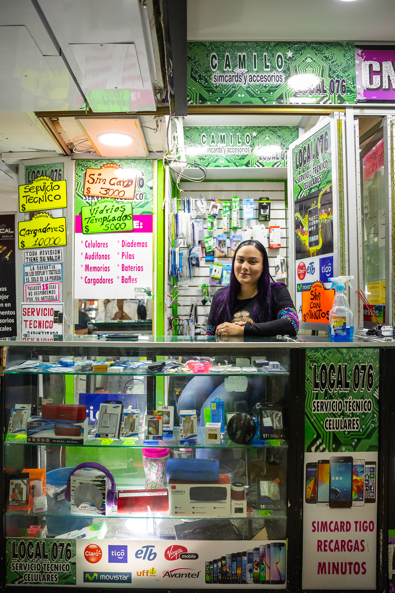
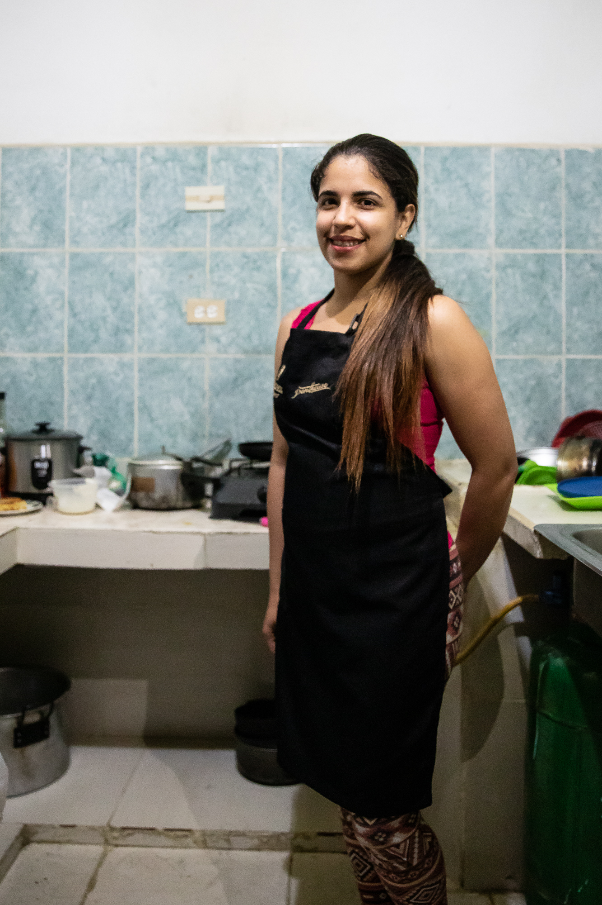
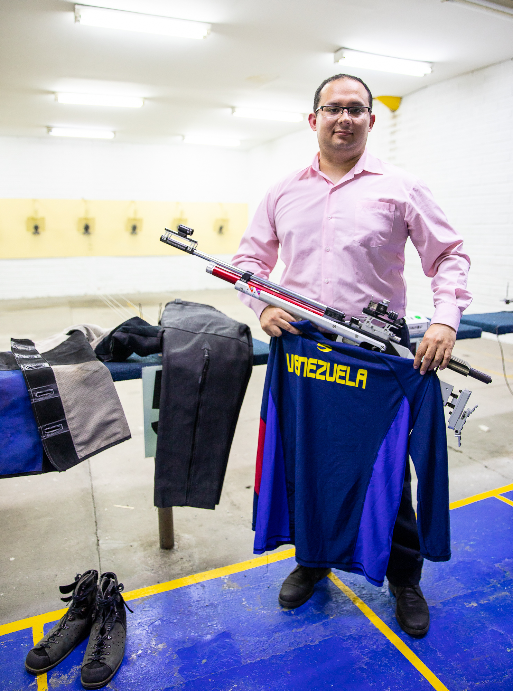

- Undocumented Venezuelans find their livelihood by singling on the street.
- This is the second story description
- A family’s sacrifice for their children’s health still has roadblocks.
- Children sacrifice their education to help their families.
- A mother’s effort to provide and reunite with her children.
Creating a new life in a new country is no easy feat, especially for the Venezuelan people. Many of these immigrants in Colombia strike an uphill, as their journeys have faced many obstacles in their search to restart or preserve their way of life. This dream of success isn’t impossible, however. These Venezuelans have done just that; whether it be living life without debt for the first time or preserving a family business, these Venezuelans have found a way to survive for their families.
Linelvy Rivas
Linelvy immigrated from ______, Venezuela with her husband and her newly born child. They had a similar cell phone shop in Venezuela, but due to the crisis, her and her husband decided to move to Medellín. Her and her family’s journey from Venezuela to Medellín wasn’t easy at all; they originally moved in with a friend in _______ for ______; he, however, wasn’t loyal to them. He ended up stealing their business’ products that they took with them and selling them away behind their backs. This is when they decided to move to Medellín, because _______. Eventually the found their place in the Boyacá Mall, after the managers of the mall saw the strong work ethic of Linelvy’s husband, and decided to give them the shop to work for commission. “(Quote about how they’re just out of debt for the very first time in two years.)”

Linelvy Rivas poses for a portrait inside her cell phone shop in Boyacá Mall near Parque Berrio on March 11, 2019 in Medellín, Antioquia, Colombia.
Richard Javier Fariñas Herrera
Richard Javier Fariñas Herrera poses for a portrait with his fencing sword outside of his residence on March 11, 2019 in Aranjuez, Medellín, Antioquia, Colombia.
Oneidys Alejandra Rodríguez

Oneidys Alejandra Rodríguez poses for a portrait inside her kitchen where she conducts her bakery business inside of her residence on March 11, 2019 in Aranjuez, Medellín, Antioquia, Colombia.
She lives with her family and has a daughter. [more details about her life and why she decided to move over]. She started running a bakery because ________. She advertises her bakery on Facebook, where people can request whatever they need for events. “(Quote about how her bakery is idk)”
Jonathan Freites

Jonathan Freites poses for a portrait inside of BOXClub on March 13, 2019 in Santa María de Los Ángeles, in Medellín, Antioquia, Colombia.
He was a civil engineer in Venezuela, but [idk something happened so there’s gonna be more details about his life.] [Detail about how he found his job at BOXClub] “(Quote about his life here or whatever is important)”
Raul Vargas

Raul Vargas, a rifle shooter for the Colombian national team, poses for a portrait with his Venezuelan uniform and rifle at his practice range on March 13, 2019 in Atanasio Girardot Stadium in Medellín, Antioquia, Colombia
Raul was one of the top olympic shooters in Venezuela, and is now one of the top olympic rifle shooters in all of Colombia. He’s competed everywhere from ______ to Georgia. Eventually, he decided to move over to Medellín because his wife was Colombian and his father was recruited by the Colombian national team to coach their rifle shooters; however, he still needs the necessary paperwork to become a Colombian national citizen, or else he cannot compete for the Colombian national team. Although he has pride in being a Venezuelan, and still wears his Venezuelan shooting jersey underneath his current jerseys, he plans on staying in Colombia for the long-term.
Rui Pereira
Pereira attended school in the U.S. at ________ to play baseball and graduated with a degree in business. His family owned three successful restaurant chains, headed by his father; however, when things started to take a turn, he made the decision to move wife and ____ children to Medellín before things started to look desperate in Venezuela because he feared for the safety of him, his family, and the family business. In the ____ years that he has been in Venezuela, Pereira opened up an Italian restaurant chain, Della Nonna Trattoria, in _3?4?__ different locations in the city of Medellín. (“Quote about the business or somn”)

Rui Pereira, owner of Della Nonna Trattoria, poses for a portrait inside of his restaurant located at Mall Del Este on March 12, 2019 in Medellin, Antioquia, Colombia.